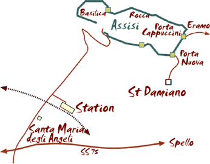

On our journey from Chianciano to Rome we stopped at Assisi. Actually we first stopped just outside Assisi to visit the Basilica of Santa Maria degli Angeli (Saint Mary of the Angels). This is where Saint Francis was said to have renounced the world in order to live in poverty among the poor and founded the first group of the Order of the "Frati Minori" (Minor Friars) in 1209. The Basilica was built over 300 years after the death of St Francis and does seem rather elaborate compared to the simple life that he led.



The Basilica di San Francesco is, in fact, two churches, an upper and a lower. The upper church is very grand, whereas the lower church is more intimate, with lower ceilings, but still very ornate. Much of Assisi was damaged during the earthquake of 1997. However, the only evidence of it to the untrained eye was that some areas of the frescoes and ceiling paintings were plain plaster.
Our journey on to Rome was through pleasant Umbrian countryside. However, there was a fire that closed the road we were due to take. This diversion meant that we were just a little later than expected arriving at our hotel in Rome.
There is a coach park at either end of Assisi and so coach parties are taken to just below Porta Nuova (the gate through the walls of Assisi) where two escalators take you up to the entrance gate of the town. The main street is then generally down hill to the Basilica di San Francesco, just below which you meet your coach again. This makes it easy for the visitors, who are not expected to explore the town above or below the main street.
The centre of Assisi, the Piazza del Comune, has a fountain, the town hall, and a church (Santa Maria Sopra Minerva) that was originally a Roman temple (thus the Corinthian columns). However, on either side of the main thoroughfare are small, steep streets, often with many steps. Some of these have been re-made so as to provide a good surface on which to walk (or climb).
As an antidote to the excess of churches, we decided to climb to the top of Assisi, to the Rocca Maggiore (the Major Fortress), which dominates the whole of the town and the valley below. The fortress, now a ruin, consists of the main building to which was added at a later date a long wall with a twelve-sided tower at the end. Inside the wall is a narrow corridor that provides access to the tower. The ruin, however, has been well maintained and the main tower has glass floors so that you can look down through your feet at the structure below.
As you can see below, the fortress has a commanding view over the valley. You can also see how much higher up the hillside we are from the main town, since the Basilica di San Francesco is in the centre of the photograph.
We partially re-traced our route down the hillside but then walked down newly laid streets (with lots of steps) to the Basilica.